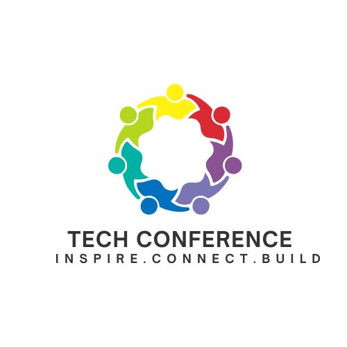

Our History
Since its inception in 2010, TechCon has grown from a small regional event into a global technology summit. It began as a grassroots effort by a group of engineers passionate about innovation and collaboration. Over the years, it has hosted thousands of attendees and has become a launchpad for groundbreaking ideas in AI, cybersecurity, and more.


Our Mission
TechCon exists to empower the next generation of innovators. Our mission is to bridge technology and humanity by fostering education, collaboration, and ethical innovation. We aim to create an inclusive space where ideas flourish and diversity drives progress.


Past Speakers
Dr. Aisha Reynolds

A leader in AI ethics, Dr. Reynolds delivered a keynote on responsible machine learning. Her work at the Global AI Institute has influenced major policy changes in tech regulation.
Carlos Mendes

As the founder of UrbanTech Labs, Carlos shared insights on smart city innovations and sustainable infrastructure. His work has transformed urban planning in several major cities.
Emily Zhang

A pioneer in augmented reality, Emily captivated the audience with a live demo of her AR platform reshaping remote education and immersive learning experiences.